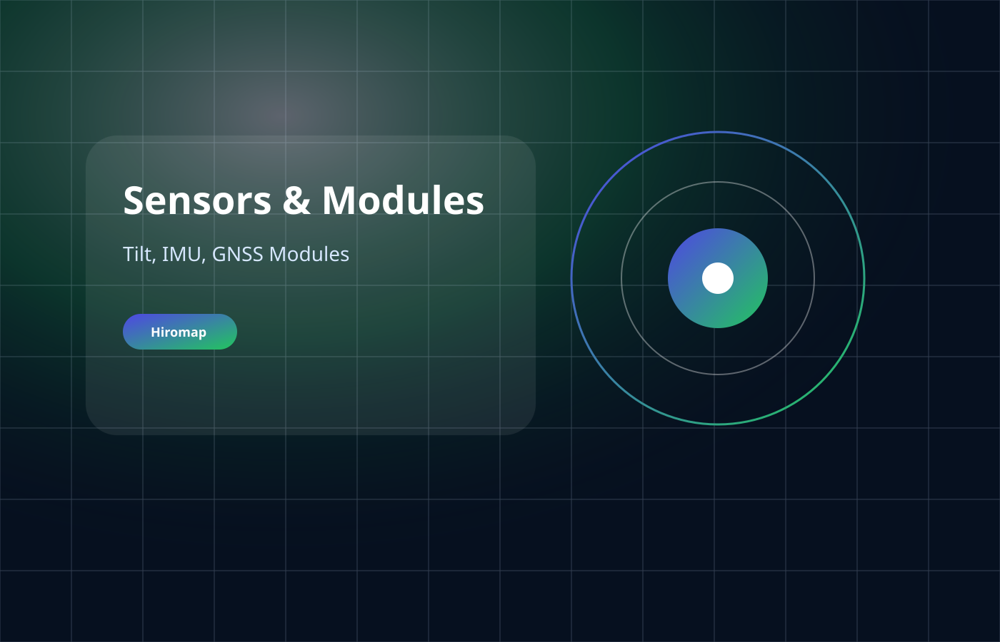

- کاربری
- سنسورهای اینرسی
- دسته
- sensors
- پشتیبانی
- مشاوره، آموزش و خدمات فنی
سنسورهای اینرسی
IMU Sensors
سنسورهای IMU برای اندازهگیری حرکت، شتاب، نرخ زاویهای و یکپارچهسازی با GNSS/INS.

Hiromap
IMU Sensors
سنسورهای اینرسی
ویژگیها
قابلیتهای کلیدی
طراحی صنعتی و قابل اتکا
قابل استفاده در پروژههای میدانی
پشتیبانی فنی هیرو نگار
قابل سفارشیسازی بر اساس نیاز پروژه
مشخصات
مشخصات فنی و عملیاتی
کاربردهای پیشنهادی
این محصول برای پروژههایی مناسب است که نیاز به عملکرد پایدار، پشتیبانی فنی و امکان انتخاب پیکربندی متناسب با شرایط عملیاتی دارند.
- پروژههای صنعتی و زیرساختی
- نقشهبرداری و پایش
- سامانههای سازمانی و پروژهای
مشاوره محصول
برای انتخاب نسخه مناسب IMU Sensors با ما تماس بگیرید
021-88359714 | info@hiromap.com